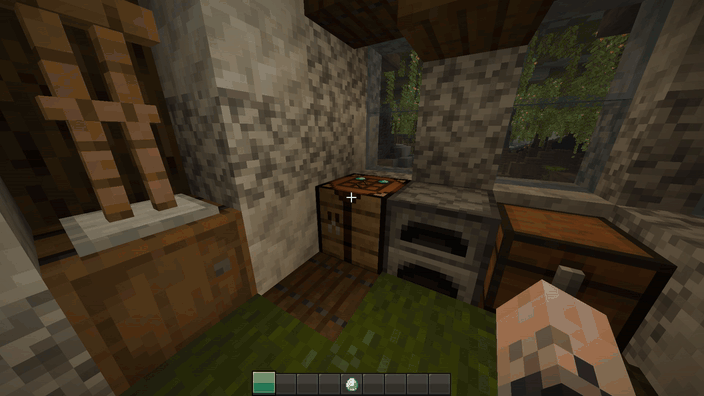

Cinematic Interactions
Craft directly in the Minecraft world.
Full HD video · 60 fps · 10.8 seconds · original colors and framing
Preview the animated GIF

704 × 396 · 10 fps · infinite loop
Craft directly in the Minecraft world.
Full HD video · 60 fps · 10.8 seconds · original colors and framing

704 × 396 · 10 fps · infinite loop